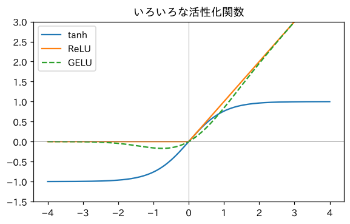

第2部 ゼロから作る · 第9章
文脈を広げる：埋め込みと多層パーセプトロン
直前8文字を見る、本物のニューラル言語モデル
おすすめは「ページを読みながら、コードを自分のノートブックに1セルずつ貼って実行」。完成ノートは困ったときの答え合わせ用です。
つくるもの
直前8文字から次の文字を予測するニューラル言語モデル（MLP）。初めて「数えるbigram」の記録を破る
ついでに身につく理論
- 埋め込み（embedding）：文字を数の組（ベクトル）で表す
- ニューロンと全結合層
- 活性化関数（tanh・ReLU・GELU）となぜ非線形が必要か
- パラメータ数の数え方
- 汎化：見たことのない並びにも対応できる理由
新しく使うPython
classと__init__、selfnn.Moduleとforwardnn.Embeddingとnn.Lineartorch.optim.SGD（zero_gradとstep）.viewで形を変える

ミナト
8文字も見るなら、組み合わせは 通り……？ 数える気が失せる数ですね。

ボンゴ先生
だから数えない。代わりに、文字の「特徴」を学ばせる。「先」と「奥」はどちらも人を呼ぶ言葉の前に来やすい、とか、「。」の次は文の始まりだ、とかね。特徴でとらえれば、見たことのない並びでも「似たような並びは見たことがある」と推測できる。人間の読書と同じだ。
準備
いつもの準備セルです（第8章と同じ）。
import re, math, urllib.request
import torch
import torch.nn as nn
import torch.nn.functional as F
def load_soseki(file_id="773_ruby_5968"):
url = ("https://raw.githubusercontent.com/aozorahack/aozorabunko_text/master/"
f"cards/000148/files/{file_id}/{file_id}.txt")
text = urllib.request.urlopen(url).read().decode("cp932")
text = text.split("-------------------------------------------------------")[2]
text = text.split("底本：")[0]
text = re.sub(r"《.*?》", "", text)
text = re.sub(r"※?［＃.*?］", "", text)
text = text.replace("｜", "").replace("\r\n", "\n")
text = re.sub(r"\n{3,}", "\n\n", text)
return text.strip()
text = load_soseki()
chars = sorted(set(text))
V = len(chars)
stoi = {ch: i for i, ch in enumerate(chars)}
itos = {i: ch for ch, i in stoi.items()}
data = torch.tensor([stoi[c] for c in text])
n = int(len(data) * 0.9)
train_data, val_data = data[:n], data[n:]8文字の窓
文章の上に「8文字分の窓」を置いて、窓の中の8文字を入力、その次の1文字を正解にします。窓を1文字ずつずらせば、問題がたくさん作れます。
T = 8 # 窓の大きさ（何文字前まで見るか）
def get_batch(data, batch_size, g):
ix = torch.randint(0, len(data) - T, (batch_size,), generator=g) # 窓の開始位置をランダムに
x = torch.stack([data[i:i + T] for i in ix]) # 入力：8文字
y = data[ix + T] # 正解：その次の1文字
return x, y
g = torch.Generator().manual_seed(0)
x, y = get_batch(train_data, 4, g)
print(x.shape, y.shape)
for i in range(4):
print(repr("".join(itos[j] for j in x[i].tolist())), "→", repr(itos[y[i].item()]))torch.Size([4, 8]) torch.Size([4])
'私の注意を母より' → 'は'
'にしてやりたかっ' → 'た'
'き移ってからも、' → '当'
'を見ていた。私は' → '私'（どの窓が選ばれるかは乱数で決まります。）x の形は [4, 8]。4問ぶんの、8文字ずつの入力です。
埋め込み：文字を「点」にする
ニューラルネットワークに文字を渡すには、文字を数にしなければなりません。第6章のone-hot（2061個の数のうち1つだけ1）は、無駄が多いうえに、どの文字どうしも「同じくらい違う」ものとして扱ってしまいます。
そこで、各文字に 少数の数の組 を割り当てます。たとえば2個の数なら、各文字は平面上の1つの点になります。
torch.manual_seed(0)
C = torch.randn(V, 2) # 2061文字 × 2個の数（最初はでたらめ）
print("「先」の座標：", C[stoi["先"]])
print("「奥」の座標：", C[stoi["奥"]])
print(C[x].shape) # 4問 × 8文字 × 2個の数「先」の座標： tensor([-0.4445, 0.8185])
「奥」の座標： tensor([0.8115, 0.1629])
torch.Size([4, 8, 2])C[x] の形 [4, 8, 2] は、「4問 × 8文字 × 各文字2個の数」です。第6章で、one-hot × 表 ＝ 表の行の取り出し、でしたね。C[x] は、それを番号で直接やっています。
層を重ねる：多層パーセプトロン
8文字ぶんの埋め込みが手に入ったら、それを1列に並べて、計算を2段重ねます。
- 隠れ層：埋め込みを並べたもの（8文字 × 32 = 256個の数）を、256個の「ニューロン」で変換する
- 出力層：その結果から、2061文字それぞれの点数（ロジット）を出す
d, H = 32, 256 # 埋め込みの大きさ、隠れ層の大きさ
torch.manual_seed(0)
C = torch.randn(V, d)
W1 = torch.randn(T * d, H) * 0.1
b1 = torch.zeros(H)
W2 = torch.randn(H, V) * 0.1
b2 = torch.zeros(V)
emb = C[x] # [4, 8, 32]
flat = emb.view(4, T * d) # [4, 256]：8文字ぶんを横一列に並べる
h = torch.tanh(flat @ W1 + b1) # [4, 256]：隠れ層
logits = h @ W2 + b2 # [4, 2061]：次の文字の点数
print(emb.shape, flat.shape, h.shape, logits.shape)torch.Size([4, 8, 32]) torch.Size([4, 256]) torch.Size([4, 256]) torch.Size([4, 2061])なぜ tanh を挟むのか：非線形性
隠れ層の計算で、torch.tanh(…) という関数を通しています。これを 活性化関数（activation function）と言います。どんな形の関数か、見てみましょう。
!pip install -q matplotlib-fontjaimport matplotlib.pyplot as plt
import matplotlib_fontja
z = torch.linspace(-4, 4, 200)
plt.figure(figsize=(6, 3.5))
plt.plot(z, torch.tanh(z), label="tanh")
plt.plot(z, torch.relu(z), label="ReLU")
plt.plot(z, F.gelu(z), label="GELU", linestyle="--")
plt.axhline(0, color="gray", lw=0.5); plt.axvline(0, color="gray", lw=0.5)
plt.ylim(-1.5, 3)
plt.legend()
plt.title("いろいろな活性化関数")
plt.show()
部品をまとめる：クラスで書く
ここまでの部品（C、W1、b1、W2、b2）をバラバラに持っていると、管理が大変です。PyTorchでは、モデルを クラス という設計図にまとめて書きます。
class MLP(nn.Module):
def __init__(self, V, T, d=32, H=256):
super().__init__()
self.emb = nn.Embedding(V, d) # 埋め込みの表（C）
self.fc1 = nn.Linear(T * d, H) # 隠れ層（W1, b1）
self.fc2 = nn.Linear(H, V) # 出力層（W2, b2）
def forward(self, x):
e = self.emb(x) # [B, T, d]
h = torch.tanh(self.fc1(e.view(len(x), -1))) # [B, H]
return self.fc2(h) # [B, V]
torch.manual_seed(0)
model = MLP(V, T)
print(model)
print("パラメータの数：", sum(p.numel() for p in model.parameters()))MLP(
(emb): Embedding(2061, 32)
(fc1): Linear(in_features=256, out_features=256, bias=True)
(fc2): Linear(in_features=256, out_features=2061, bias=True)
)
パラメータの数： 661421学習させる
学習ループは第8章とほぼ同じです。今回は、パラメータの更新を オプティマイザ（optimizer）という道具に任せます。
@torch.no_grad()
def val_loss(model):
X = torch.stack([val_data[i:i + T] for i in range(len(val_data) - T)])
Y = val_data[T:]
return F.cross_entropy(model(X), Y).item()
torch.manual_seed(0)
g = torch.Generator().manual_seed(0)
model = MLP(V, T)
optimizer = torch.optim.SGD(model.parameters(), lr=0.1)
for step in range(10001):
x, y = get_batch(train_data, 256, g)
loss = F.cross_entropy(model(x), y)
optimizer.zero_grad() # 勾配を0に
loss.backward() # 勾配を計算
optimizer.step() # パラメータを更新
if step % 2000 == 0:
print(f"ステップ {step:5d}：訓練 {loss.item():.3f} 検証 {val_loss(model):.3f}")ステップ 0：訓練 7.659 検証 7.662
ステップ 2000：訓練 3.594 検証 3.919
ステップ 4000：訓練 3.591 検証 3.677
ステップ 6000：訓練 3.178 検証 3.532
ステップ 8000：訓練 3.333 検証 3.448
ステップ 10000：訓練 2.734 検証 3.395CPUで2分ほどかかります。コーヒーでも淹れてきてください。……戻ってきましたか？ 検証損失が 3.395。数えるbigramの3.581を、ついに破りました！
記録表を更新
| モデル | 章 | 検証データの損失 |
|---|---|---|
| でたらめ | 5 | 7.631 |
| bigram（数える） | 5 | 3.581 |
| ニューラルbigram | 8 | 3.685 |
| MLP（直前8文字、SGD 1万ステップ） | 9 | 3.395 |
書かせてみる
窓を1文字ずつずらしながら生成します。最初の8文字は自分で与えます。
@torch.no_grad()
def generate(model, start, n=100, seed=0):
g = torch.Generator().manual_seed(seed)
ids = [stoi[c] for c in start]
for _ in range(n):
x = torch.tensor([ids[-T:]]) # 直前8文字
probs = F.softmax(model(x), dim=1)[0]
ids.append(torch.multinomial(probs, 1, generator=g).item())
return "".join(itos[i] for i in ids)
print(generate(model, "私はその人を常に"))私はその人を常によう加打で返事が物った。先生と奥さんはたしようで。ただの光をある時がら見た。
「今は他いに私を煎にかず話する果べ橋当に告配夫明問にする親ないでも事去上かに故このよに冷座来なく遥えますか」
奥さんまし「返事が」「先生と奥さんは」「ただの光を」。かぎかっこ「 」で会話文を始めて、ちゃんと閉じてもいます。bigramにはできなかった芸当です（直前1文字しか見ないので、かぎかっこを開いたことを覚えていられない）。……中身は相変わらず支離滅裂ですが、一歩前進です。
訓練と検証の差に注目
学習の出力をもう一度見てください。最後の訓練損失は2.734、検証損失は3.395。訓練のほうがずっと良いですね。
もっと深く2003年の元祖ニューラル言語モデル
この章のモデルは、ヨシュア・ベンジオらが2003年に発表した論文「A Neural Probabilistic Language Model」の設計とほぼ同じです。彼らは単語の埋め込みと、このMLPを使って、それまで主流だったn-gramモデルを上回る成績を出しました。当時のコンピュータでは学習に何週間もかかったそうです。あなたはColabで2分。20年の進歩を感じますね。
クイズ 1：埋め込みの形
語彙が5000文字、埋め込みの大きさが64のとき、埋め込みの表の形とパラメータ数は？
答えを見る（まず自分で考えてから！）
形は [5000, 64]、パラメータ数は 5000 × 64 = 320,000 個です。
クイズ 2：非線形
活性化関数を取り除いて h = self.fc1(…) にすると、モデルの表現力はどうなる？
答えを見る（まず自分で考えてから！）
全結合層2段が、まとめると1段の全結合層と同じになってしまい、表現力が落ちます。直線（線形な変換）をいくら重ねても直線のままだからです。
クイズ 3：パラメータを増やすと？
隠れ層の大きさ H を256から512に倍増すると、隠れ層と出力層のパラメータはそれぞれ約何倍になる？
答えを見る（まず自分で考えてから！）
隠れ層は 256 × 512 ＋ 512 ＝ 131,584 で約2倍、出力層は 512 × 2061 ＋ 2061 ＝ 1,057,293 で約2倍です。どちらも H に比例します。MLP(V, T, H=512) を作って print で確かめてみましょう。
できたらチェック
ボンゴ先生
次の章は「学習のお医者さん」。学習がうまくいかないとき、何を診ればいいか。初期化、正規化、Adam、学習率スケジュール、ドロップアウト……GPTを学習させる前に必要な道具を、一気に救急箱に詰め込もう。
押すと目次にチェックが付きます（この端末のブラウザにだけ保存）。